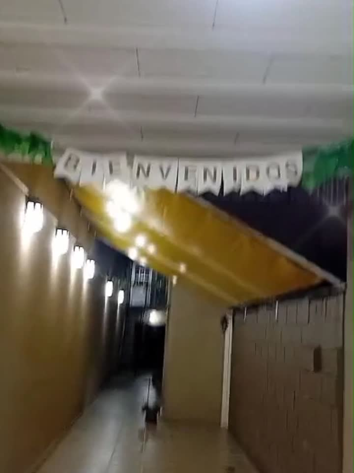
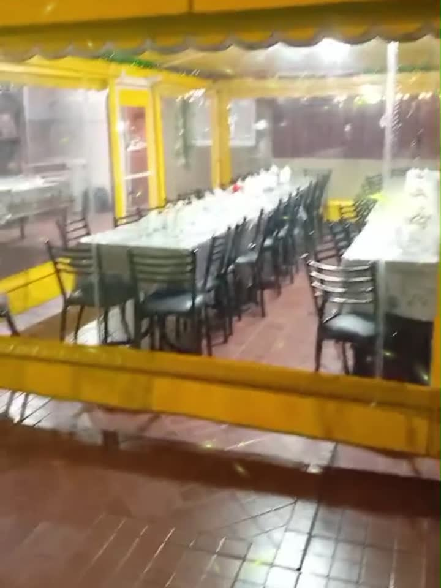
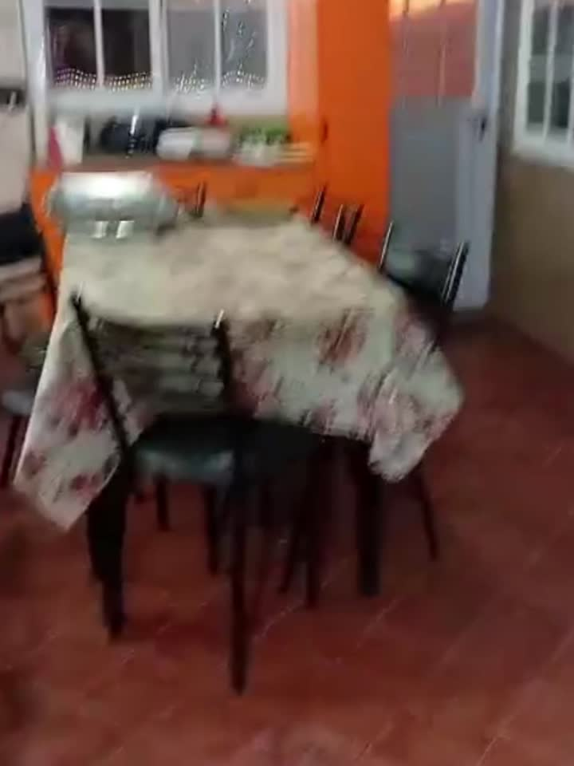
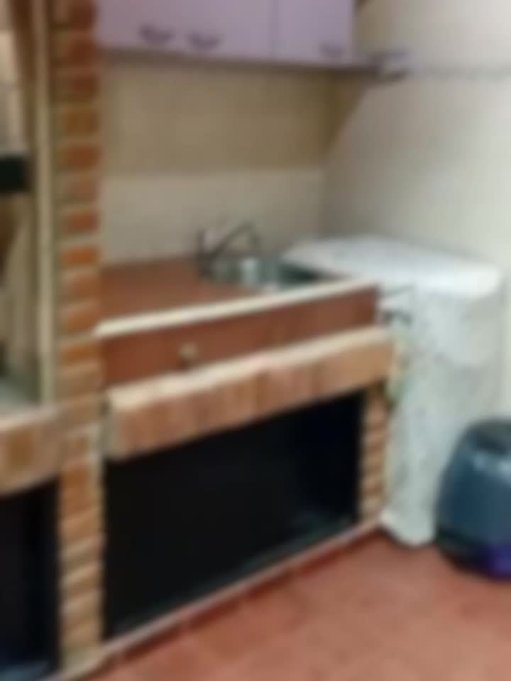
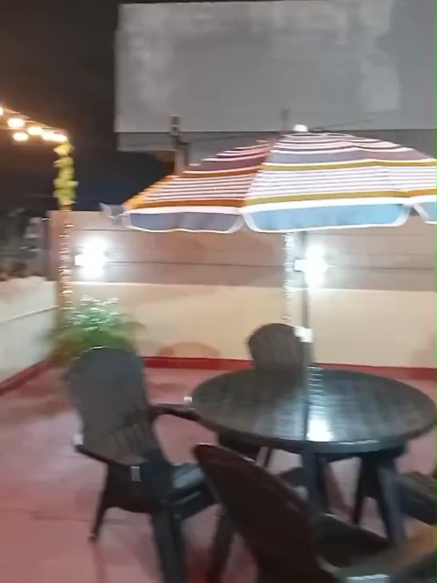
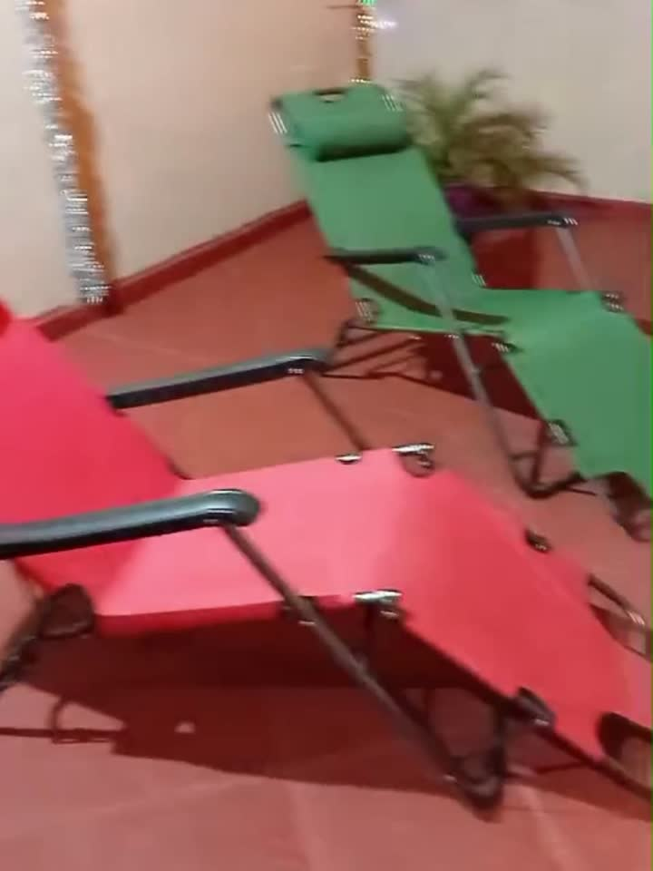
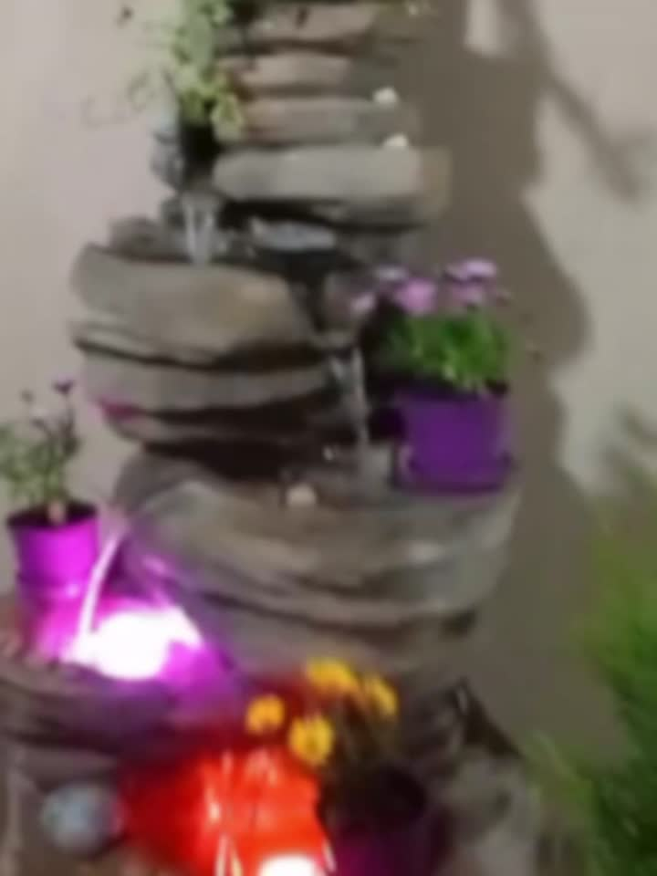

Retiros
Una jornada fuera de la rutina, con quincho, patio y cocina para todo el grupo.
“Todo tiene su tiempo” Eclesiastés 3:1
Un lugar tranquilo para que tu iglesia haga sus retiros, seminarios y encuentros de matrimonios, a 6 cuadras de la plaza de San Justo.
καιρός
En griego, kairós es el tiempo oportuno: ese momento justo en el que pasan las cosas importantes. Una casa pensada para que tu iglesia viva el suyo.
Kairo's recibe a iglesias evangélicas y grupos cristianos. No es un salón de fiestas: es una casa para compartir, orar y aprender juntos.
Una jornada fuera de la rutina, con quincho, patio y cocina para todo el grupo.
Mesas y sillas en el quincho para enseñanzas, capacitaciones y talleres.
Un ambiente cálido, con luces en el patio, para que las parejas compartan.
Reuniones de jóvenes, de mujeres, de líderes o de ministerio: contanos qué tienen pensado.
Deslizá para ver cada lugar de la casa. Las fotos son del video del lugar.







Elegí el tipo de encuentro, una fecha tentativa y cuántos son. Te armamos el mensaje para mandarlo por WhatsApp a Kairo's.
Kairo's está en San Justo, La Matanza. En plena zona oeste del Gran Buenos Aires. La dirección exacta te la pasamos por WhatsApp cuando coordinamos.
Pedir la direcciónPara iglesias evangélicas y grupos cristianos: retiros, seminarios, encuentros de matrimonios y otras actividades de la iglesia.
El quincho tiene capacidad para más de 40 personas.
Quincho cerrado con mesas y sillas, cocina completa con heladera con freezer y freezer grande, parrilla, patio con sillones, sombrillas, reposeras y luces, juegos (pool, metegol, tejo y dardos), una cascada, baños y duchas.
Por WhatsApp al 11 3219-2211. Si usás el armador de arriba, el mensaje sale con el tipo de encuentro, la fecha y la cantidad de personas.
Escribinos por WhatsApp y coordinamos.